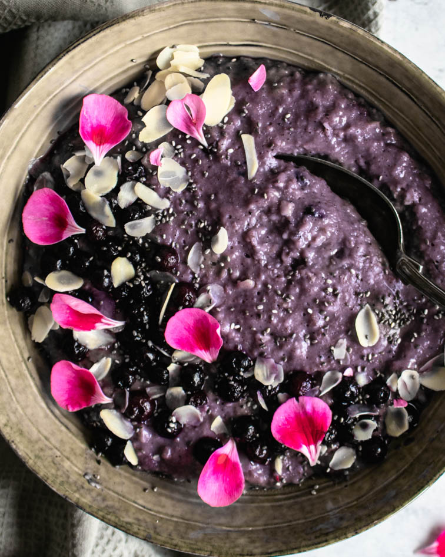

Açai Blueberry Oatmeal

Description
This easy and quick bowl of warming Açai Blueberry Oatmeal is perfect for a cold weekday morning, who said you can't eat healthy even if you don't have a lot of time?!
Ingredients
- Quick cooking oats
- Water
- Almond milk (or any other kind of milk)
- Frozen blueberries
- Açai powder
- Vanilla bean paste
- Maple syrup, agave syrup or any other liquid sweetener
- Any toppings, such as almonds, chia seeds, etc...
Steps
- Add the blueberries to a microwave-safe bowl, and heat for about a minute on full power until the blueberries are defrosted
- Add the rest of the ingredients and cook for 3 more minutes
- Take out the bowl and stir, then let it sit for a minute and then stir again
- Top with more blueberries, almonds and chia seeds if desired.